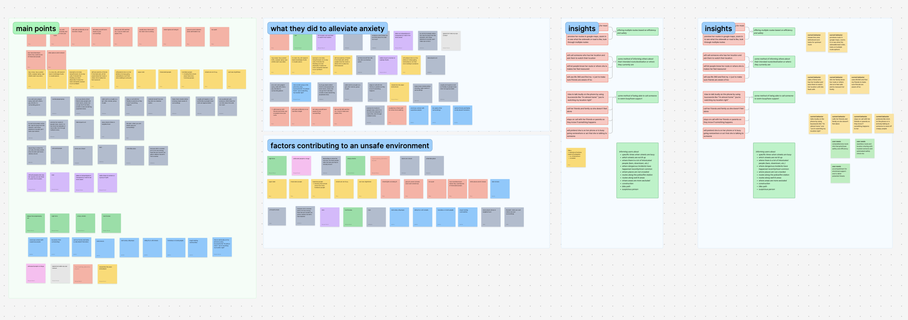
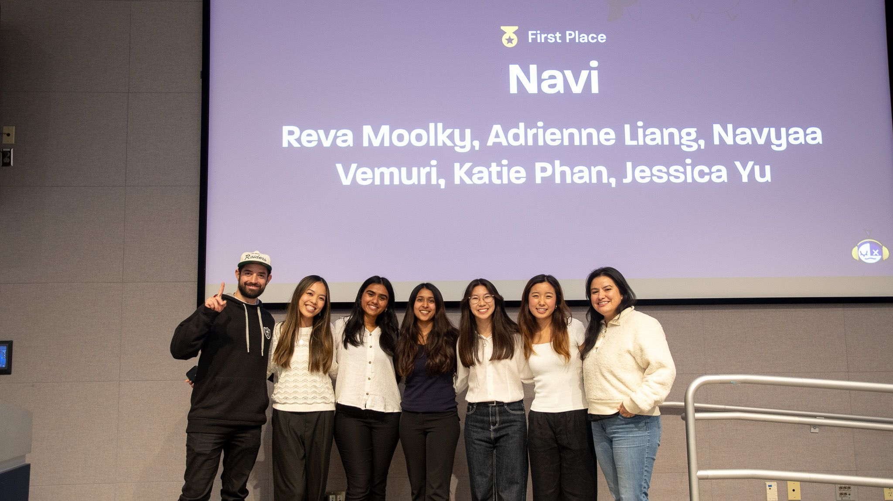

a safety app that felt like a friend walking beside you.
How five designers tackled pedestrian safety in 24 hours — with real user research, a GPT-4o integration, and a first place finish.
⏱
24 hours to research, design, prototype, and present.
Role
Full Stack Designer
Timeline
24 hours
Team
5 designers
Tools
Figma · FigJam · GPT-4o
tldr; the outcomes
🥇
1st place among 20+ teams at UX Fest SLO
50+
data points, 3 rounds of affinity mapping
3
rounds of iteration from lo-fi to hi-fi
The problem
The prompt was "travel." We built for the trip most people don't think about.
The hackathon prompt asked for a travel experience. Every team reached for flights, hotels, and itineraries. We took a step back: what travel problem actually affects people every single day? For five women on our team, the answer came quickly — walking alone, and the anxiety that comes with it.
45%
of women feel unsafe taking walks in their area (Gallup, 2023)
60%
of adults felt unsafe walking alone after dark (ONS, 2021)
40%
of Americans afraid to walk alone at night — highest since 1993 (Gallup, 2025)
Research
50+ data points. 3 rounds of affinity mapping. In under 4 hours.
We ran rapid interviews and synthesized findings into three clear pain points. Not assumptions, actual patterns from real people. The affinity map below shows how we clustered raw data into insight categories in real time during the hackathon.
FigJam affinity map — 50+ data points clustered into main pain points, behaviors, contributing factors, and insights. Done in under 4 hours.
3 core pain points
1
Uncertainty in route safety
Users spend extra time researching new or unfamiliar areas beforehand, looking for the safest and most efficient route. No single tool gave them pedestrian-specific safety data.
2
Sharing location for reassurance
Users feel more secure when they inform friends or family of their location and route. But doing this was fragmented across multiple apps — texts, Life360, Google Maps share — with no unified experience.
3
Staying on the phone to feel safe
Users call trusted people or pretend to be on a call to deter potential threats. When no one is available, they feel more vulnerable — there was no designed solution for this gap.
What existed already
Google Maps — fastest route, not safest
Waze — built for drivers, not pedestrians
Citizen — crime data, no route guidance
Nothing unified for pedestrian safety
The gap we designed for
Route safety ranked by real incident data
Location sharing built into the walk flow
An AI companion for when no one picks up
Ideation
Translating pain points into features without reinforcing fear.
We mapped each pain point to a behavior, and each behavior to a solution. The user flow diagram below shows how we thought through every path a user might take through the app before opening Figma.
Current behavior
Our solution
Spending time researching area beforehand, previewing routes in Google Maps
Calling someone who has their location, letting people know their route
Using Life360 so friends are aware of location
→
Offering multiple routes based on efficiency and safety, ranked by incident data
Some method of informing others about intended route or where they currently are
Tries to talk loudly using buzzwords like "you're watching my location right?"
Calls friends and family so she doesn't feel alone
Pretends to be on the phone or act busy to deter threats
→
Some method of being able to call someone to seem busy and have support
User flows

Full user flow diagram — onboarding, route selection, location sharing, tracking friends, safety alerts, and incident reporting. Built before any wireframes.
Key calls we made in testing
Removed the nav bar between low-fi and mid-fi -> It was giving users information overload.
Removed friends' route visibility -> Too similar to existing apps, not differentiated enough.
Removed safety ratings by neighborhood -> Ratings could mis-generalize areas and reinforce bias. We replaced with incident-based data that showed facts, not judgments.
Design
Material Design as a foundation. Speed and familiarity as a feature.
With 24 hours total, we made a deliberate choice: base our design system on Material Design. Users already know it, and its documentation meant we could move fast without sacrificing consistency. We spent our limited time on the interactions that mattered most — the AI companion and the route safety flow.
Feature 01
Safe route selection with incident data
Input a destination or choose from saved places
Reduces friction — most walks are routine, so saved destinations make it faster to get going safely
View ranked safe routes based on incident reports
Surfaces real community-reported data so users make an informed choice, not just the fastest path
Each route shows estimated time and incident count
Lets users weigh safety vs speed themselves — respects autonomy rather than deciding for them
Feature 02
Sharing location with trusted contacts
Share ETA and live route with trusted contacts
Accountability without intrusion — contacts only see what is needed, not constant tracking
Contact receives a message with route preview link
Lowers the barrier for the contact — no app install needed, just a link they can check if worried
Feature 03
AI companion call for safer walks
AI-generated call mimics natural human conversation
Being on a call is a known deterrent — this gives users that protection even when no one is available
One-tap access to call 911 at any point
The companion call buys time, but real help is always one tap away — users never feel trapped
"Even short, real-time conversations with AI can increase user confidence and reduce anxiety when walking alone."
— GPT-4o interaction testing, Navi research
Outcome

The Navi Team & Judges!
🏆
First place, UX Fest SLO
Among 20+ teams. Data-driven, user-tested, and shipped in 24 hours. The judges cited our research depth and the AI companion feature as the strongest differentiators.
Learnings
What 24 hours of real pressure taught me.
01
Rapid testing still gives you real insights
We didn't have days or weeks. We had hours. But even a quick round of user feedback revealed things we never would have caught on our own — the nav bar overload, the bias in safety ratings. Research doesn't have to be long to be meaningful.
02
Validate the technology before designing for it
I led the GPT-4o research before we committed to the AI companion feature. Designing around AI assumptions you haven't tested leads to features that don't actually work. We validated first — then designed.
03
Designing for safety means designing against fear
The hardest moment was cutting the neighborhood safety ratings. They felt useful. But they were a design choice that could harm real communities. That tension — between what feels helpful and what actually is — is something I think about in every project now.